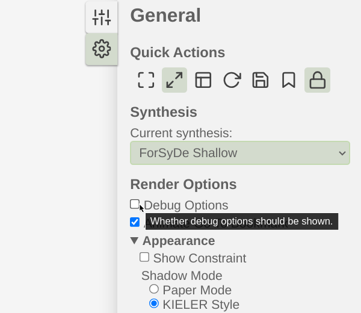
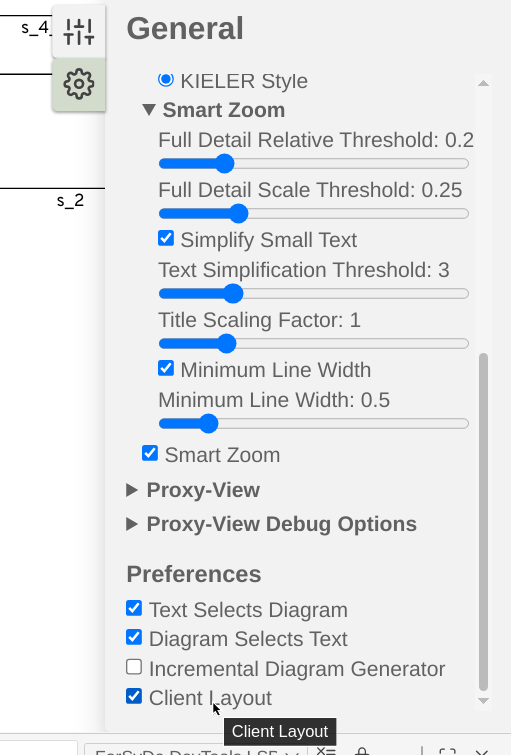

User Guide
This user guide provides usage information for the ForSyDe DevTools compiler, language server, and VSCode visualiser extension. Additionally, the guide outlines the programming restrictions which need to be followed when developing ForSyDe Shallow models for these development tools.
Using the compiler
The output of the usage and help prompts for the ForSyDe DevTools compiler is shown below for reference:
$ stack exec forsyde-compiler-exe -- --help
ForSyDe DevTools
Usage: forsyde-compiler-exe INPUT [(-o|--output OUTPUT) | --stdout]
[--output-c | --output-core | --output-forsyde-ir |
--output-forsyde-ir-json |
--output-procedural-ir | --output-schedule]
[-t|--target TARGET] [--input-type INPUTTYPE]
[--runs RUNS] [--forsyde-pkgpath ARG]
Compile a ForSyDe model
Available options:
INPUT Input filename
-o,--output OUTPUT Output filename
--stdout Print output to stdout
--output-c Output file in C (default)
--output-core Output file in Core
--output-forsyde-ir Output file in ForSyDe-IR
--output-forsyde-ir-json Output file in ForSyDe-IR-JSON
--output-procedural-ir Output file in Procedural-IR
--output-schedule Output the SDF schedule to file instead of code
-t,--target TARGET Target platform for C code. (PC default, PC and PICO2
supported)
--input-type INPUTTYPE Source of input tokens for the SDF models in the C
code. (stdin default, stdin and predefined supported)
--runs RUNS How many times to loop input data, when input mode is
set to 'predefined'. 1 By default, pass an integer
for a limited number or 'inf' to run the program
perpetually
--forsyde-pkgpath ARG The path to the ForSyDe Shallow package (unspecified
by default)
-h,--help Show this help text
By default the compiler will output a file named main with a specific extension depending on the output format.
This can be overriden by either --stdout or --output <name>.
To build the C output, the header files located at examples/implementation/platform_independent/include are needed. This can be accomplished by adding the include path to the compiler:
gcc -I examples/implementation/platform_independent <generated output>
Another option is to link the directory to where you are building it:
ln -s $PWD/examples/implementation/platform_independent/include <build directory>
To build the version for the ES-LabKit you need an existing project of the ES-Lab-Kit repository created with newembproj -noRTOS <name>.
Specify --target=PICO2 to forsyde-compiler-exe so the right headers are included.
Link the include directory as above and build according to the instructions.
There is some additional documentation for it which can be useful if you are working with the board.
Using the VSCode extension
Once the extension is installed, it can be used on supported models. To try it
out, select one from the examples/model directory, e.g. SDF_example_002.hs.
Select "Open in Diagram" from the right-click menu inside the source file
editor if it does not open automatically.
If you see no image the first time that is expected. This is due the client layout being disabled by default in the KLighD extension. In the cog-wheel of the diagram window, first check "Debug Options" and then check "Client Layout" at the bottom of the settings list which should make the diagram visible. The setting should persist, but if you get no diagram it is a good thing to check.


Once you have a diagram, you can get to the source code related to the visual element being rendered by clicking on it, which will select it in the window with the source code editor. The language server currently does not support the reverse, i.e. selecting the diagram element when clicking in the source code.
If at any point while using the Visualiser VSCode extension, the ForSyDe DevTools language server crashes, you can restart the extension using the ctrl+shift+p command and selecting "Developer: Reload Window" (start typing "reload window" in the text field if it does not appear). This might happen because certain edge cases are not caught when attempting to visualise an invalid model or incomplete Haskell code.
If you have no diagram (or an outdated one) or the "Current synthesis:" drop-down is empty, try the above step. For further debugging you can select "ForSyDe DevTools LSP" in the Output window. E.g. in the case when the language server complains about not finding ForSyDe Shallow when importing it, recheck the build instructions (likely for stack).
Using the language server separately
The output of the usage and help prompts for the ForSyDe DevTools language server is shown below for reference:
$ stack exec forsyde-lsp-exe -- --help
ForSyDe DevTools
Usage: forsyde-lsp-exe [--tcp | --stdio] [-a|--address IP] [-p|--port PORT]
[INPUT | --input-client] [--forsyde-pkgpath ARG]
Run a ForSyDe LSP
Available options:
--tcp Protocol communcation over TCP (default)
--stdio Protocol communication over standard input/output
-a,--address IP Host IP
-p,--port PORT Host TCP Port
INPUT Input filename (debug option), if unset get file from
client
--input-client Input from client (default)
--forsyde-pkgpath ARG The path to the ForSyDe Shallow package (unspecified
by default)
-h,--help Show this help text
The language server can be run separately which is primarily useful during
development or when using KLighD CLI. To run the VSCode extension using the
language server separately, launch VSCode with dev=1 code.
This can also be combined with running the VSCode extension without installing it:
code --extensionDevelopmentPath=$PWD/vscode-ext
When the langauge server is run on an input file directly it outputs the JSON message which would be sent to the language client when the model is visualised (with some small differences).
To run with KLighD CLI:
cabal run forsyde-lsp-exe
# In a separate shell
./klighd-linux --ls_port 5007 <path/to/model.hs>
This will open up a new tab in the browser with the visualiser.
Programming guidelines and restrictions
Examples of supported ForSyDe Shallow models can be found in the examples/model directory. It is highly recommended to read through them and follow their style when using the ForSyDe DevTools.
The following is a set of programmer restrictions which limit what the compiler accepts as input Haskell and ForSyDe code.
- The input program should be a correct Haskell/ForSyDe program. ForSyDe DevTools currently does not have any input validity checking mechanisms.
ifexpressions are not supported.- Netlists can only be defined using the identifier
system. wherescopes are not allowed to be nested except for the initial module scope. Example of unallowed pattern:Haskell system :: Signal Int -> Signal Int system s_in = s_out where s_out = p_1 s_in where p_1 = actor11SDF 1 1 f f [x] = [x]Define a separate function instead:Haskell system :: Signal Int -> Signal Int system s_in = s_out where s_out = p_1 s_in p_1 = actor11SDF 1 1 f f [x] = [x]- Inline process constructor applications in the system are not supported.
Example of unallowed pattern:
Haskell system :: Signal Int -> Signal Int system s_in = s_out where s_out = delaySDF [0] s_inDefine a separate function instead:Haskell system :: Signal Int -> Signal Int system s_in = s_out where s_out = d_1 s_in d_1 = delaySDF [0] - Only signals are allowed inside the system.
Example of unallowed pattern:
Haskell system :: Signal Int -> Signal Int system s_in = s_out where s_out = d_1 s_in d_1 = delaySDF [0]Define a separate function instead:Haskell system :: Signal Int -> Signal Int system s_in = s_out where s_out = d_1 s_in d_1 = delaySDF [0] - Signals cannot be implicitly split.
Example of unallowed pattern:
Haskell system :: Signal Int -> (Signal Int, Signal Int) system s_in = (s_out, s_1) where s_1 = p_1 s_in s_out = p_2 s_1 -- ...Split the signal explicitly instead:Haskell system :: Signal Int -> (Signal Int, Signal Int) system s_in = (s_out, s_1b) where s_1 = p_1 s_in (s_1a, s_1b) = p_split s_1 s_out = p_2 s_1a p_split = actor12SDF 1 (1, 1) split split [x] = ([x], [x]) -- ...